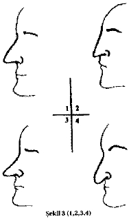

Ara ş t ı rma Serisi No.13
¯¯¯¯¯¯¯¯¯¯¯¯¯¯¯¯¯¯¯¯¯¯¯¯¯¯¯¯¯¯¯¯¯¯
22
Yüz Okuma Sanat ı
¯¯¯¯¯¯¯¯¯¯¯¯¯¯¯¯¯¯¯¯¯¯¯¯¯¯¯¯¯¯¯¯¯¯
A ş ı r ı düz al ı n - yumu ş ak karakter, bazen dar dü ş ünceli A ş ı r ı enli al ı n - h ı rç ı n, çabuk sinirlenen, kibirli.
A ş ı r ı küçük al ı n - hareketli, çevik (genelde manevi de ğ erleri çok da yüksek olmayan).
Küçük ve dar al ı n - i ş ine özen göstermeyen.
Al ı n K ı r ı ş ı klar ı
Düz, k ı r ı ş ı ks ı z al ı n - kay ı ts ı z, e ğ lenceye meyilli. Ka ş lara yak ı n yatay k ı r ı ş ı klar ı olan al ı n - derin zeka. Saçlara yak ı n yatay k ı r ı ş ı klar ı olan al ı n - gaddarl ı k, kibirlilik Katman ş ekilli kal ı n k ı r ı ş ı klar ı olan al ı n - zekas ı orta düzeyde olan, tembellik, uyu ş ukluk.
Her tarafa yay ı lan k ı r ı ş ı klar ı olan al ı n - garip, orijinal. Burun taban ı na do ğ ru dikey k ı r ı ş ı klar ı olan al ı n - derin zeka.
Yatay, paralel ve az belirgin k ı r ı ş ı klar ı olan al ı n - sa ğ duyulu, adil. Dikey k ı r ı ş ı klar ı olan al ı n - derin zeka, enerjik, kibirli, ş öhret tutkunu.
Derin ve zikzak ş ekilli k ı r ı ş ı klar ı olan al ı n - i ş te ba ş ar ı s ı zl ı k. Derin ve zikzak ş ekilli k ı r ı ş ı klar ı olan ensiz ve kemikli al ı n- ars ı zl ı k, yüzsüzlük ve her türlü kötü huylar. Tüm yönlere yay ı lm ı ş e ğ ri k ı r ı ş ı klar ı olan al ı n - geri zekal ı , geçimsiz ve kaba.
Burun
Büyük burun ( Ş ekil 3, No. 1) - kibirli, ş öhret tutkunu, ba ş ı na buyruk ve enerjik. Aln ı n uzant ı s ı ş eklindeki burun ( Ş ekil 3 No. 2) - ş öhret tutkunu. Uzun burun ( Ş ekil 3, No. 3) - bencil, ş erefsiz, rezil, h ı rs ı zl ı ğ a meyilli ve ahlaks ı z. A ğ za do ğ ru sarkm ı ş burun ( Ş ekil 3, No. 4) - hassasl ı k. Sivri uçlu kartal burun ( Ş ekil 3, No. 5) - h ı rç ı n. Yuvarlak ve kalk ı k burun ( Ş ekil 3, No. 6) - ahlaks ı zl ı k. Taban ı çökük, ucu ise sivri ve sark ı k burun ( Ş ekil 3, No. 7) ters, k ı skanç, merakl ı , kurnaz ve ikiyüzlü.

Gaga burun ( Ş ekil 3, No. 8) - ş air ruhlu.
__________________________________________________________________
© WWW.MAXIMUMBILGI.COM